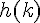
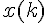
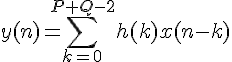
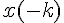

Фильтры с конечной импульсной характеристикой
Классическая (трансверсальная) структура фильтра использует только текущие и предыдущие значения входящих сигналов
Поэтому если входная последовательность содержит конечное число ненулевых отсчетов то и выходная будет иметь конечную длительность
Импульсная характеристика фильтра - выходная последовательность фильтра во временной области при подаче на вход единственного отсчета равного единице которому предшествует и за которым следует нулевые отсчеты
Особенность фильтра с КИХ: коэффициенты фильтра с КИХ является отсчетами его импульсной характеристики
Коэффициенты фильтра полностью определяют его свойства. Изменяя коэффициенты фильтра можно получить любой тип фильтра(режекторный, полосовой, нижних и верхних частот)
Чем больше отведений тем выше его порядок
Фильтры с КИХ выполняют операцию свертки, суммируя произвеения отсчетов входной последовательности на коэффициенты фильтра
Т.е. выходная последовательность КИХ фильтра равна свертке входной последовательности с импульсной характеристикой
Свёртка. Вычисление свёртки. Её свойства
Общее выражение свёртки 2-х последовательностей
Если существует 2 последовательности , длина которой p и , длина которой q (во временной области) то свёртка вычисляется по формуле

Для заданного y(n) индекс h(k) возрастает при уменьшении индекса , поэтому можно ввести последовательность , которая представляет собой исходную последовательность x(k), зеркально отображенную относительно индекса ноль
Такая замена приведет к следующему алгоритму вычесления свёртки: